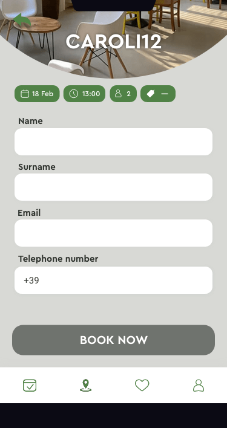
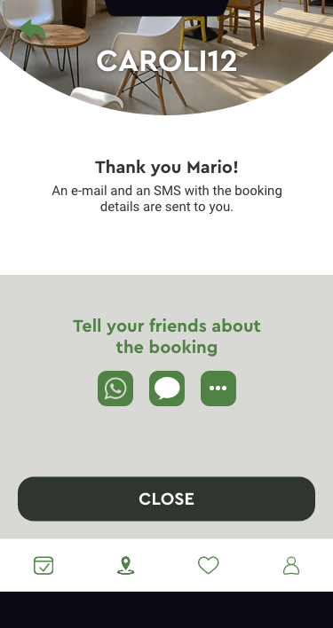
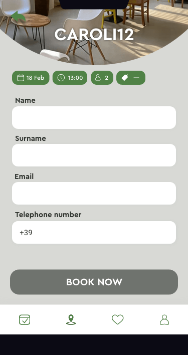
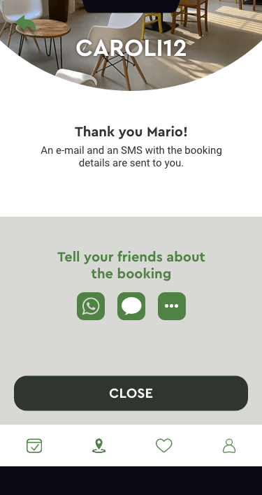

Thefork is an online restaurant booking
application which offers discounts and
other services related to booking a
restaurant table digitally. The aim of
this redesign was to make it easy for the
user to quickly book a table and to assist
the user to find their preferred choices
of place, taste and atmosphere as smoothly
and quickly as possible. In the process of
work benchmarking, workshops, user researches
in forms of interviews, user tests, personas,
ideating, user flows and specifications as
well as prototyping was performed.
➝ Click here
to see more about the process work.
➝ Or, Scroll down, to see three redesigned userflows for thefork.
In these three videos,
you'll see the below listed main flows.
From the left:
1. Start page for a non-member user
2. Booking a table
3. Creating my account


 


